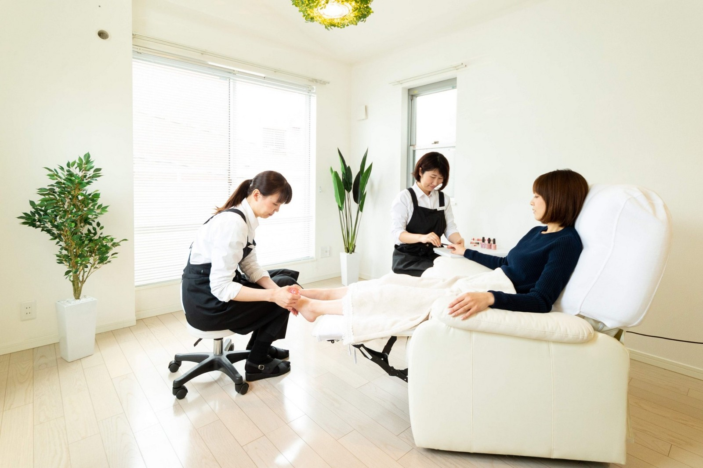
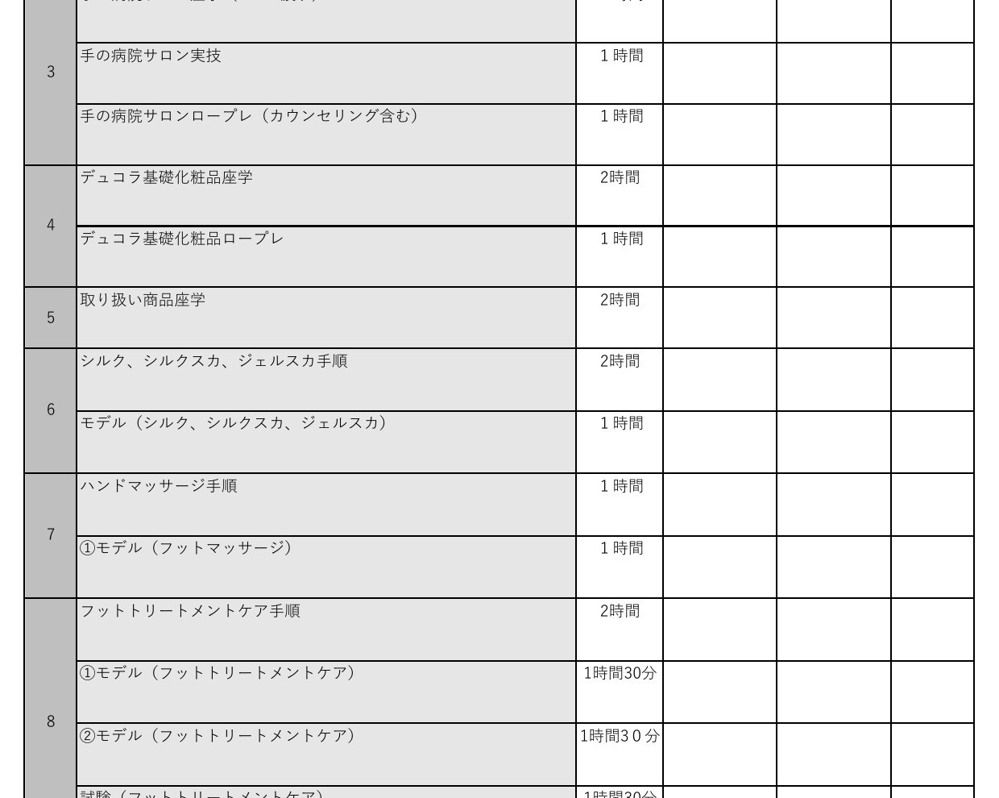
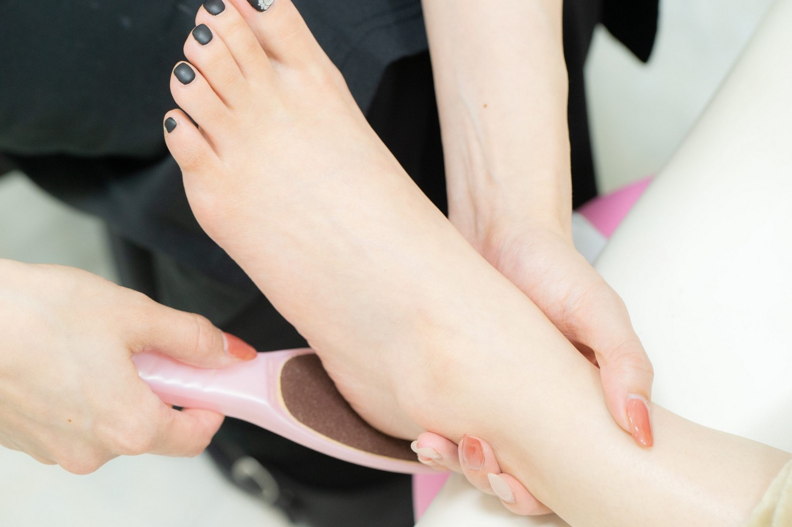
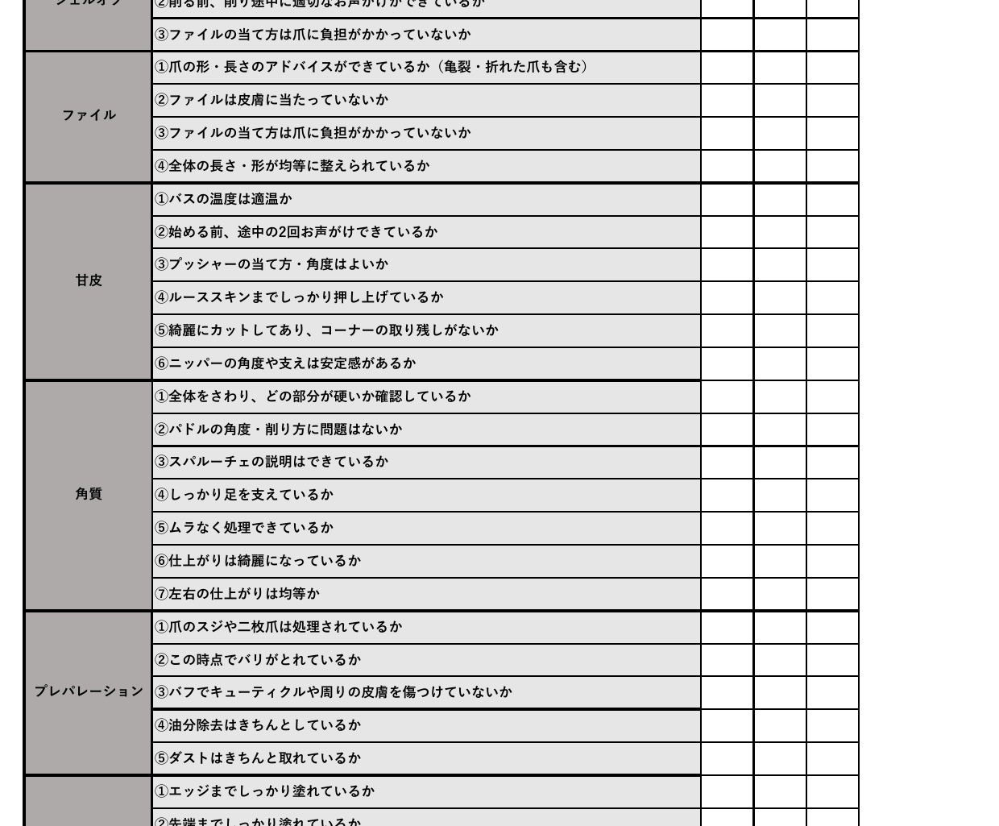
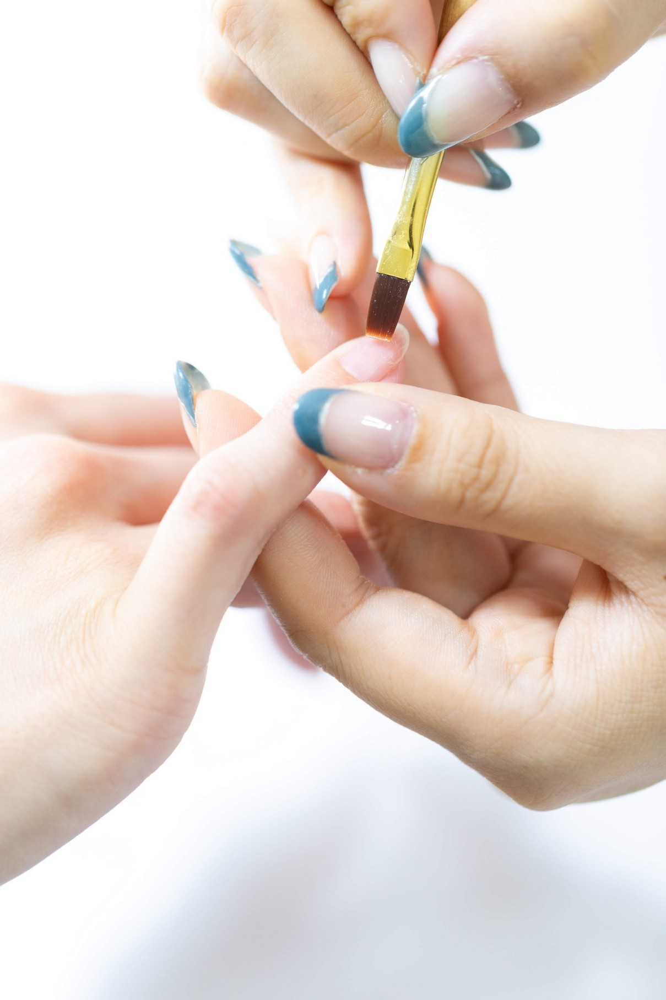
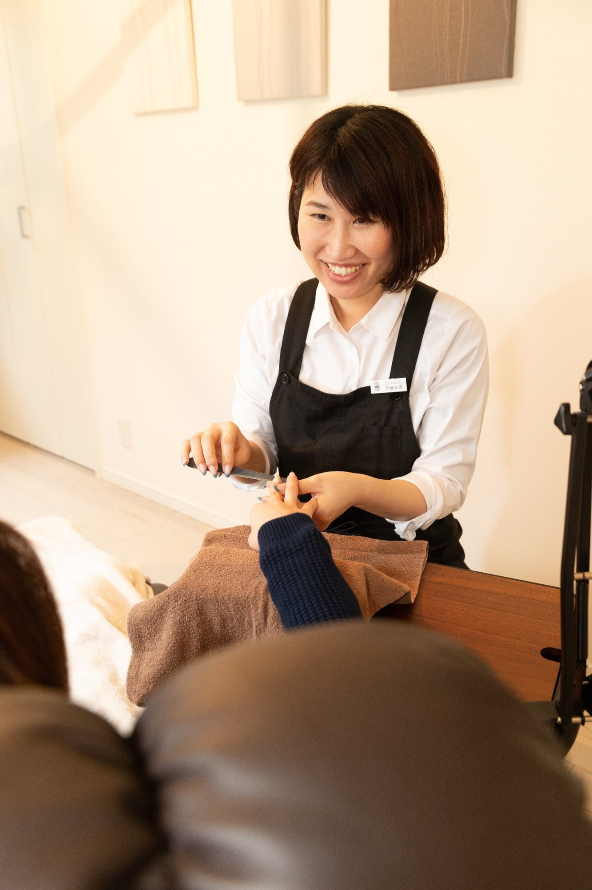
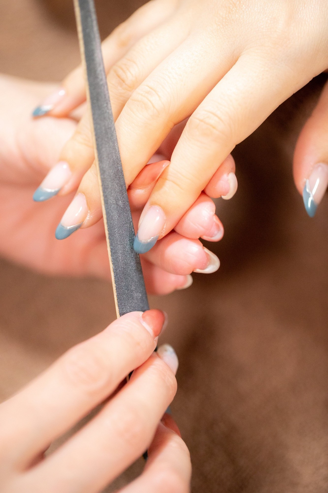
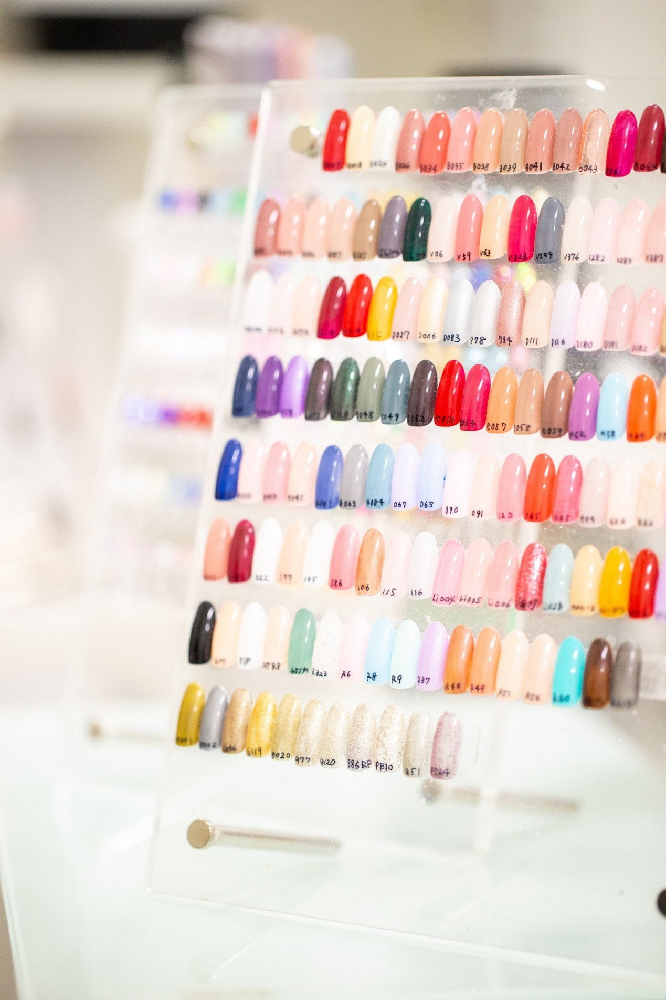
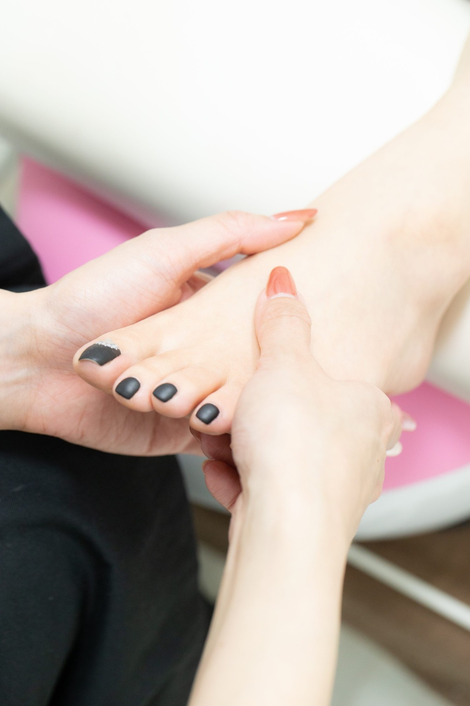

WORK / LIFE / GROWTH
しっかり働く。
しっかり休む。
そして、ちゃんと
成長する。
お客様には丁寧に。仕事はテキパキと。
技術も、収入も、自分の時間も。
どれかを諦めるのではなく、
ネイリストという仕事を、
長く続けられる働き方を。
Nail Salon Re Pool / リプール株式会社

仕事と人生、どちらも大切に。
02 / PHILOSOPHY
長くネイリストを
続けられる会社でありたい。
ネイルの仕事が好きでも、
「休みが少なくて続けられない」
「頑張っても給与につながらない」
「いつまでも成長できない」
そんな環境では、好きな仕事を長く続けることは難しいと考えています。
お客様に喜んでいただくこと。技術者として成長すること。頑張った分が収入につながること。そして、自分の時間も大切にできること。
「楽だから働きやすい」ではなく、
仕事もプライベートも大切にできる働き方。
会社としても、従業員が満足できる職場環境を整え、従業員満足度を高めることを事業理念として掲げています。
03 / WHY WE RECRUIT
人数を増やしたいから、
ではありません。
現在リプールでは、多くのお客様にご来店いただき、予約をお断りしなければならない場面も増えてきました。予約が集中するときには、オーナー自身も施術に入り、お客様を担当しています。
まず一人を採用し、きちんと育てる。
- 011人を採用
- 02きちんと育成
- 03予約状況を確認
- 04必要なら次の1人
人数ありきではなく、お客様の数とスタッフの成長に合わせて、少しずつ会社を大きくしていきます。
04 / WORK STYLE
お客様には丁寧に。
仕事はテキパキと。
丁寧に
お客様一人ひとりに向き合える施術時間を確保する。
テキパキと
準備・片付け・カルテ・切り替えなど、無駄な時間を減らす。
休む日は、しっかり休む。
働く日は、しっかり働く。
「お客様、スタッフ同士の時間を共有している自覚を持ち、時間を守る」という考え方を社内マニュアルにも明記しています。
05 / TRAINING
「見て覚えて」だけの
研修にはしません。
研修中も通常給与を支給し、練習に必要なモデルもサロン側で用意します。入社した瞬間から一人で何とかしてください、という環境ではありません。
- 01サロンの考え方
- 02基礎知識
- 03手順
- 04ロープレ
- 05モデル施術
- 06試験
- 07お客様を担当
06 / TRAINING CURRICULUM
「研修制度があります」だけでは、
分からないから。
実際にカリキュラム表を使い、学ぶ内容と順番を具体的に組んでいます。
予定 → 実施 → チェック
ジェル・ネイルの基礎知識、カウンセリング、商品知識、ロープレ、技術手順、モデル施術、試験など。
「何を練習したらいいのか分からない」
という状態にできるだけしないことも、会社の役目です。

07 / MODEL → TEST
モデル施術を重ねてから、
試験へ。
- フットトリートメントケア
- 手順 → モデル施術 → 試験
- フットトリートメントジェル
- 手順 → 複数回モデル施術 → 試験
- ハンド
- モデル施術を繰り返す → 試験
練習した ＝ すぐお客様を担当する、
ではありません。

08 / TEST・CHECK SHEET
「お客様を担当できるか」を
確認します。
仕上がりだけでなく、接客・衛生・提案・会計・次回予約・お見送り・時間管理まで確認します。
- お出迎え
- 衛生管理
- 準備
- 施術中の声かけ
- 提案
- 会計
- 次回予約
- お見送り
- 時間管理
丁寧 ＝ 時間をかければいい、
ではありません。
仕上がり、接客、安心感、そして時間。すべてを含めてプロとして担当できる状態を目指します。

09 / GROWTH・SALARY
成長を、給与にもつなげます。
できることが増えたら、基本給も上がる。
- STEP 1＋5,000円
- STEP 2＋5,000円
- STEP 3＋5,000円
- STEP 4＋5,000円
フットは「ケア」＋「ジェル」の2内容を合わせて、給与アップ上の1ステップとして扱います。
こちらがゴールではありません。
その後も、売上歩合・各種手当など、収入につながる仕組みがあります。

10 / GROWTH PACE
焦らせない。
でも、成長を止めない。
月数だけで決まる仕組みではありません。
入社
基礎から開始
3か月頃
3ステップほどが
一つの目安半年頃
最後のステップ／
正社員へ
大切なのは、早さだけではありません。
お客様を安心して担当できる技術者になること。そこまで会社も一緒に育てます。


11 / PROFESSIONAL
「入客できる」から
「選ばれる」ネイリストへ。
試験に合格して、お客様を担当できるようになる。それはゴールではなく、ネイリストとしてのスタートです。
- 希望を聞く
- 合った提案をする
- 施術時間を守る
- また来たいと思っていただく
「あなたにお願いしたい」
そう言っていただけるネイリストを目指します。
12 / COMPENSATION
基本給だけで終わらない。
月給 21 万円〜
- 技術ステップによる基本給アップ
- 売上歩合
- 物販歩合 10%
- 口コミ手当
- 住宅手当
- 各種手当
- 交通費
- 時間外手当
実際の給与明細でも、個人予算達成歩合・口コミ歩合・物販歩合・住宅手当・資格手当などの支給実績があります。
※各手当には支給条件があります。すべての手当が全員一律に支給されるものではありません。
13 / BENEFITS
福利厚生も、
日々の働きやすさも。
- 賞与 年2回
- 6月・12月
- お弁当支給
- 週1回
- 社会保険完備（研修期間中も加入）
- 交通費支給
- 制服貸与
- 研修制度
- 社員割引
- エステ・ホワイトニングの施術も福利厚生で利用できます
同じ会社が運営するエステサロン・ホワイトニングサロンが対象です。
新入社員は入社から6か月経過後、次に迎える賞与月から支給対象。賞与額は勤務状況・評価・会社状況等を踏まえて決定します。
14 / WORKING HOURS
出勤日は、集中して働く。
- 8:30〜17:30
- 9:00〜18:00
- 10:00〜19:00
実働8時間・休憩1時間
お客様一人ひとりに必要な施術時間は確保しながら、予約の間に必要以上の空き時間をつくらないようにしています。
急いで雑に施術するのではなく、
時間を意識しながら丁寧に仕事をする。
15 / HOLIDAYS
年間休日119日
＋誕生日休暇
年間休日119日 ＋ 誕生日休暇
完全週休2日制を基本に
31日の月：月10日休み
30日・29日・28日の月：月9日休み
1月・8月：月12日休み
- お盆 5連休
- 年末年始 6連休（12/31〜1/5）
- 別の月にも 最大7連休まで取得可能
- 毎月 3連休まで取得可能
- 土日祝の希望休も申請可能
有給休暇は入社後すぐに5日付与。さらに入社半年後に5日付与し、合計10日となります。その後は法定通り加算します。

16 / CUSTOMERS
集客を、
個人任せにはしません。
会社がつくる環境
集客
予約
教育
スタッフが育てる価値
技術
接客
「もう一度選ばれる」力
入社しただけで売上や指名が保証されるわけではありません。会社とスタッフ、両方でお客様を増やしていきます。
17 / GROWTH OF COMPANY
誰かの売上を奪うための
採用にはしません。
- 今いるスタッフがしっかり働けている
- それでも予約を受けきれない
- 新しい人が需要を担当
- 育ってもなお予約超過なら次の採用
一人採用して、一人育てる。
その積み重ねで、無理なく会社を大きくしていきます。
18 / WHO WE WANT TO WORK WITH
休みも欲しい。
でも、仕事も頑張りたい。
こんな方と働きたい
- ネイルが好き
- もっと技術を身につけたい
- お客様に喜んでもらうことが好き
- 教えてもらったことを素直に吸収できる
- 自分でも練習できる
- 周りへの気遣いができる
応募に必要な資格
公益財団法人日本ネイリスト検定試験センター（JNEC）主催「ネイリスト技能検定試験1級」
お客様には丁寧に向き合いながら、仕事では時間を意識してテキパキ動ける。
19 / TEAM CULTURE
大人として、
気持ちよく働ける関係。
プライベートまで仲良くしなければならない会社ではありません。会社としての飲み会は一切ありません。歓迎会・忘年会・新年会も行っていません。
仲良しを求めるのではなく、プロとして気持ちよく働けるチームをつくります。
- 困っている人がいれば助ける
- 相手の立場を考える
- 時間を守る
- 言葉を選ぶ
- お客様にもスタッフにも敬意を持つ

YOUR WORK, YOUR LIFE.
しっかり働く。
しっかり休む。
お客様には丁寧に。仕事はテキパキと。
技術を身につける。お客様に選ばれる。
売上がつくれるようになる。収入も上がっていく。
そして仕事が終われば、自分の時間も大切にする。
仕事も頑張りたい。
でも、自分の人生も大切にしたい。
そんな方に、「ここなら長くネイリストを続けられそう」と思ってもらえる会社でありたいと考えています。
この働き方が自分に合いそうだと思ったら、まずは一度、リプールのことを聞きに来てください。
WORK STYLE BOOK
Re Poolの働き方を、
もう少し詳しく。
研修、給与、休日、そしてチームのこと。
私たちが大切にしている働き方を、一冊にまとめました。